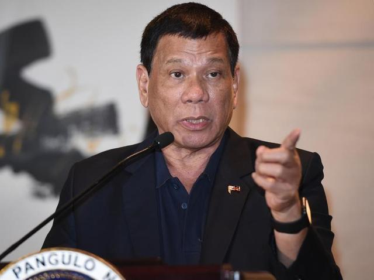
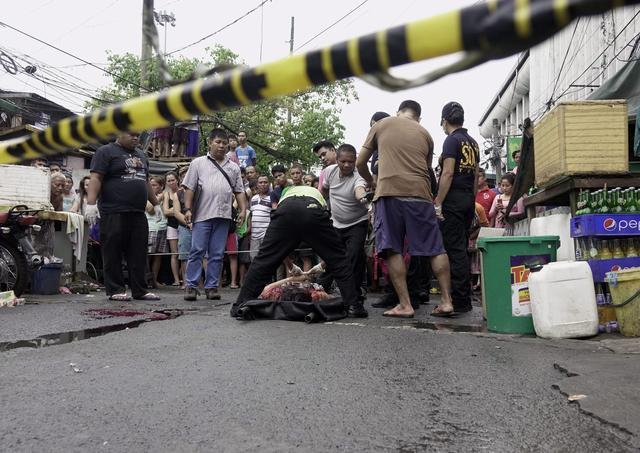
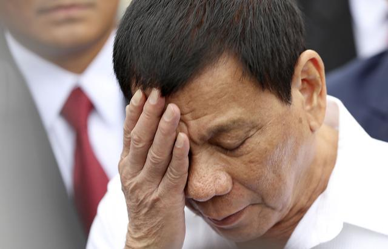
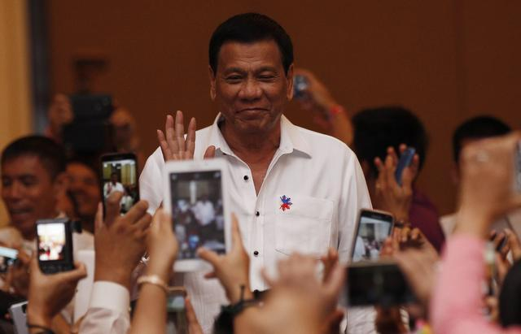

全球第一吐槽帝，才当7个月总统竟然后悔了！
2016-12-16 15:33:43 作者：环球峰云
美国总统大选硝烟刚散，朴槿惠虽被弹劾仍迟迟不愿下台……就在大家都争着抢着当总统的时候，杜特尔特却说自己不想干了？12日参加公开活动时，他表示参加大选是一个错误，如果可以重来，不会再当总统。就职短短7个月，曾在竞选阶段许下豪言壮语的杜特尔特为啥后悔了？
【两天内多次提出后悔当总统】
一向语出惊人的杜特尔特这次又没让大家失望，两天之内屡次提出后悔当总统，不想干满任期。
据菲律宾星报网站报道，12日杜特尔特出席在马拉坎南宫举办的菲律宾年度杰出青年颁奖典礼，他在现场发言称，“如果你们真的不喜欢我执政的方式，我随时可以辞职，对此我没有意见。我对于权力或是总统这个位置并没抱什么幻想。”
在同日举行的2016年杰出菲律宾人的颁奖典礼上，杜特尔特又表示自己不想干满任期。“我并不是最可靠的人，我不确定自己能否熬过未来6年。我们也别为了最可靠这个问题小题大做，我只想向菲律宾人民致敬。
这还没结束，他13日在柬埔寨首都金边访问时说，“我已经老了……不确定会任满任期”。还说在“人生最后阶段”才发现他这个年龄已不需要“总统之位”，但表示自己“有份工作，在做对的事情”，因此“很开心”。
人人都梦寐以求的总统宝座，怎么到了杜特尔特这儿就成了烫手山芋？

杜特尔特6月30日宣誓就任菲律宾总统
杜特尔特透露了自己不想当总统的理由。自从当上总统，他每天舟车劳顿，政务繁忙，常常要凌晨3点离开办公室。他说：“如果我能回到过去，我不会竞选总统。这份差事要求苛刻。它让人筋疲力尽，薪水还那么少。
他还说自己后背经常疼痛，而且患有偏头疼、血栓闭塞性脉管炎。或许是总统工作的繁重让他感到身体吃不消。
而关于钱的问题他原来就抱怨过，说13万比索（约合人民币1.8万元）的月薪太少了，不足以让他养活两个家庭。此外他感叹道，当总统之后自己非常孤独，且完全没有隐私可言。
年龄、金钱、身体情况……杜特尔特轻描淡写地提出这些辞职理由，但背后原因真的有这么简单？
【承认手刃罪犯，直面风暴中心】
不仅三番五次提出辞职，杜特尔特竟然承认自己曾经亲手杀死罪犯，在他最富争议的问题上公开叫板，似乎有点想“破罐破摔”的意思。
国内外对于杜特尔特的评价，最具争议的就是他的“铁腕”禁毒政策，国际舆论普遍批评他漠视人权，而他偏要站到风暴中心。据菲律宾媒体报道，杜特尔特周一在一个商业界论坛上讲到了菲律宾政府的扫毒行动，他说自己还是达沃市市长的时候就亲手杀过毒贩。

菲律宾街头，警方清理毒贩尸体
“在达沃市我曾经亲自动手。目的就是为了向警察展示，如果我能这么做，为什么你们不能。”
杜特尔特说自己曾驾着摩托车在达沃市里巡逻，“看看哪里有麻烦出现，我就是在找有什么情况能让我出手杀人的”。
尽管这并非杜特尔特首次承认杀人，但却是成为总统后首次公开承认。
杜特尔特的此番言论引立刻发各方对其血腥毒品战争的批评，据CNN报道，6月1日至今，已有5297人死于杜特尔特针对毒贩以及吸毒者的“极端镇压”。
人权组织大赦国际批评称：“吹嘘自己手上沾满血，杜特尔特总统将进一步鼓励警察和治安人员公然违反法律，更多执行法外处决，而无需担心被送上法庭。杜特尔特总统应该履行其义务，下令调查这些杀戮事件，将那些责任人绳之于法，而不是宣称自己曾是他们中的一员。”

在杜特尔特发表了这番言论之后，菲律宾的司法部长阿基雷于周三出面灭火，称杜特尔特只是使用了夸张的说法，“总统喜欢使用夸张的说法，目的是为了让他的信息能更好的传达”。
阿基雷还指出杜特尔特并没有犯法，“如果他杀了嫌犯的话，一定是被迫的”。 他称杀死嫌犯不一定就代表犯法，“在正当理由和正当情况下，如果警察或者官员下令逮捕嫌犯，而嫌犯进行反击的时候”就可能出现击毙嫌犯的情况。
上周末，菲律宾的人权人士组织了数天的游行，指责杜特尔特政府在扫毒行动中侵犯人权。
【老杜后悔的真正原因是什么？】
要知道，老杜最近一段时间过得不算顺利，上个月他刚刚遭受两起暗杀，本月初包括菲律宾副总统在内的两位高官又辞去了内阁职务，孤立无援的他正在面临前所未有的巨大压力。
在国内，杜特尔特竞选总统时许下的豪言壮语，想要实现似乎还遥遥无期。竞选期间他承诺就任总统后将在3到6个月内解决国内的毒品问题。9月，他表示“没有料到国家面临的毒品问题如此严重”，于是将期限延长半年，因为涉及贩毒的人实在太多了。更糟糕的是，警方高层在操纵毒品交易。”如今看来，即使再过半年，毒品问题也难解决。
而此时，副总统罗布雷多又提出辞职，并公然放话挑战他的扫毒政策。罗布雷多警告，杜特尔特的反毒战争将给民众带来“寒蝉效应”，他公开支持涉及毒品贸易的警员也令局势变得“可怕”。她说：“民众感到无助，而且日益相信政府在幕后策划了一切。”
菲律宾副总统罗布雷多在本月初辞去内阁职务
她表示将领导反对派挑战总统杜特尔特的强硬扫毒政策，“有许多人反对总统的政策，我希望我能扮演团结反对者的角色。”
除了毒品，菲律宾国内各种势力分裂，难以统一，南部多个分离主义叛军持续与政府军交战，恐怖主义蔓延，杜特尔特被刺杀也极有可能是恐怖组织所为。
而在国外，除了国际社会对菲律宾人权问题的持续批评外，与美、日两国渐行渐选也让杜特尔特陷入一定的外交危机。
知事分析，杜特尔特提出反悔当总统，确实因为巨大的压力而感到挫败和力不从心，但在一段时间内也不太可能真正放弃总统职位。

除了要继续解决毒品问题外，他在任期内很重要的一件事，就是要推动菲律宾宪法的修改，将政体变成联邦制，使更多的地方得到自治，缩小贫富差距。杜特尔特政府计划在2022年达成该目标。一旦宪法修正，菲律宾总统的任期可能缩短到4年。
杜特尔特上台后曾表明，自己对权力没有任何的欲望，他不会争取连任，而是想真正为菲律宾人民做一点实事。如果说真的辞去了总统一职，那还怎么继续推行他的政策，为人民办实事儿呢？